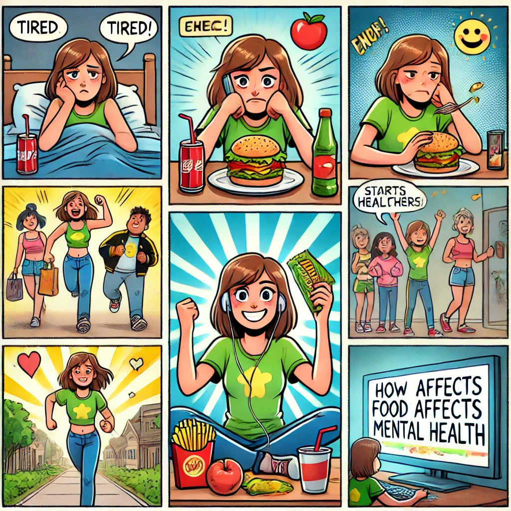
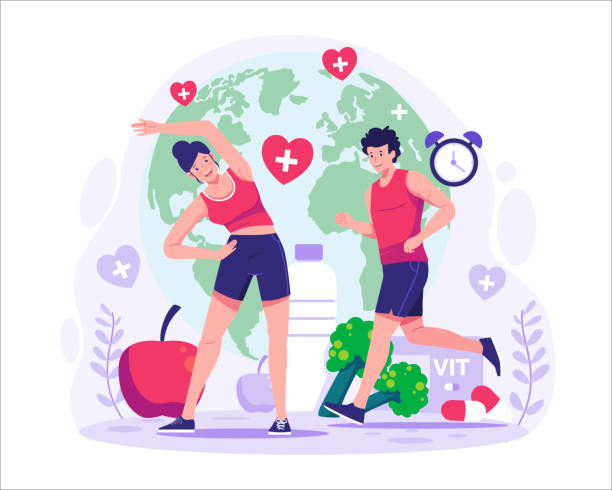
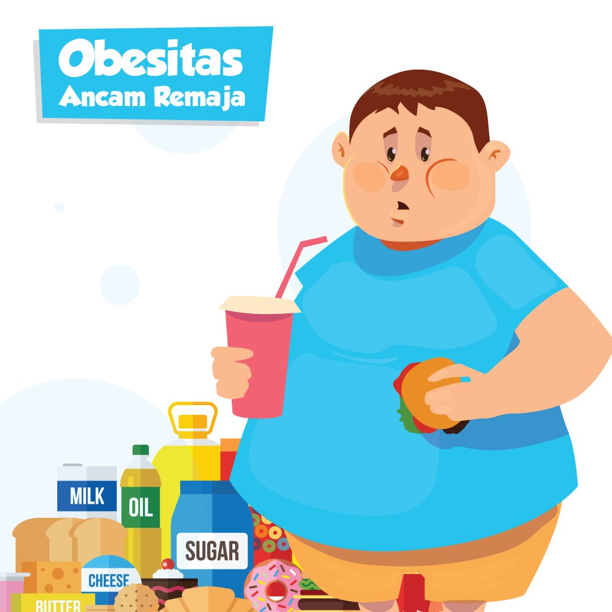

Indonesia memiliki lima generasi umum yang dapat diidentifikasi oleh para ahli, yaitu generasi tradisional,
baby boomers, generasi X, generasi Y (millennial) dan generasi Z. Generasi-generasi ini tumbuh di kondisi sosial ekonomi,
preferensi, dan ekspektasi yang berbeda-beda (Szymkowiak et al., 2021). Generasi Z atau yang biasa disebut iGeneration
atau post-millennial telah mengenal teknologi sejak awal kemunculannya. Saat iPhone pertama kali diluncurkan pada tahun 2007,
usia paling tua dari Gen Z baru sekitar 10 tahun.
Selain itu, Wi-Fi dan layanan seluler berkecepatan tinggi telah menjadi
bagian dari kehidupan mereka (Dimock, 2019). Belum ada generasi lain yang menunjukkan tingkat kenyamanan dengan teknologi
sedini ini. Remaja saat ini tidak lebih pintar dibanding generasi sebelumnya, tetapi mereka memiliki keunggulan dalam mengakses
dan menggunakan data secara cepat dan efisien (Szymkowiak et al., 2021).
Generasi Z di tahun 2023 berusia 11 hingga 23 tahun. Berdasarkan pengelompokan usia oleh Departemen Kesehatan RI (2009) dalam Al Amin (2017), rentang ini mencakup masa anak-anak (6–11 tahun), remaja awal (12–16 tahun), dan remaja akhir (17–25 tahun). Menurut Sensus Penduduk 2022, jumlah penduduk produktif (15–64 tahun) mencapai 198,357 juta jiwa, dengan sekitar 54,6 juta jiwa (27,5%) di antaranya adalah Generasi Z, menjadikan mereka lebih dari seperempat masyarakat usia produktif Indonesia.
| GAMBAR | TOPIK | PENJELASAN |
|---|---|---|
|  | Gaya Hidup, Tekanan, dan Tantangan Gizi | Masa kehidupan usia 11–23 tahun merupakan
periode tumbuh kembang menuju dewasa, yang penuh dengan perubahan fisik dan mental.
Remaja sering menghadapi tuntutan yang bertentangan antara orang tua, guru, teman sebaya,
dan diri sendiri (Roy et al., 2021). Hal ini membuat kelompok usia ini rentan terhadap stres, perubahan perilaku makan, penurunan kualitas tidur, serta gangguan gizi, termasuk risiko kelebihan berat badan (Angesti & Manikam, 2020). |
|  | Hubungan Internet dan Gaya Hidup Generasi Z | Terdapat dua hubungan antara kebiasaan berselancar di internet dan gaya hidup remaja:
|
|  | Gizi dan Risiko Kesehatan Generasi Z | Generasi Z memiliki interaksi kuat dengan teknologi,
membuat mereka cepat beradaptasi terhadap tren baru. Namun, gaya hidup serba instan
berdampak pada pola makan: mereka lebih sering mengonsumsi camilan tinggi kalori dan
rendah gizi, meningkatkan risiko obesitas. Remaja Gen Z juga menghadapi tekanan sosial dari keluarga, sekolah, dan lingkungan kerja. Stres dan gangguan tidur saling berkaitan—tidur yang kurang berkualitas dapat menyebabkan emosi tidak stabil, yang mendorong konsumsi makanan cepat saji. Kondisi ini membuat Generasi Z rentan terhadap masalah gizi dan penyakit tidak menular, seperti diabetes melitus, penyakit jantung koroner, dan obesitas. Oleh karena itu, perhatian terhadap pola hidup sehat dan edukasi gizi menjadi sangat penting bagi masa depan generasi ini. |